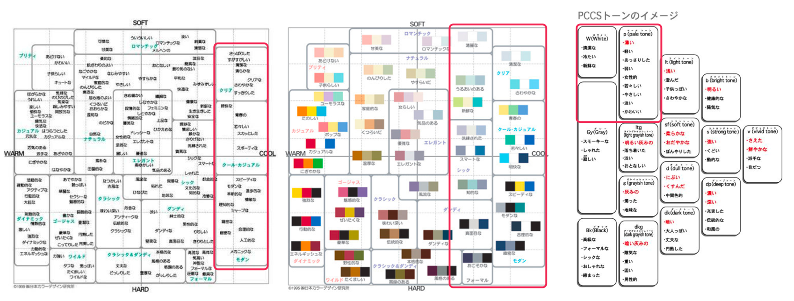

ポートフォリオ
2019
- 概要
- ポートフォリを作成するにあたって，考えた言葉はシンプルに，均一で端的に，であった．無駄な要素は極力排除し，コンテンツの統一感を出せるように心がけた．
- 担当：制作，企画，運用
- 使用ツール：sketch / VSC / Github
- 環境：html / css / Vue.js
- 期間：2019年2月 - 4月
- メンバー：1人
- URL：https://ahasebe.github.io/
- 作業内容
- コンセプト設計
- ポートフォリオを作成するにあたって、デザインのコセプトを作成した。当該ホームページのコンセプトは以下の内容で形成されている。
「シンプルに，無駄なく均一で端的」
- 配色、構成参考
- 配色に関しては、イメージスケールとPCCSトーンを参照し、配色を設定した。詳細の配色については以下の通り。
構成を検討する際にはPinterestを用いて、参考画像を収集し、構成はグリッドレイアウトを採用した。
- URL：https://www.pinterest.jp/ayahasebe/portfolio/
